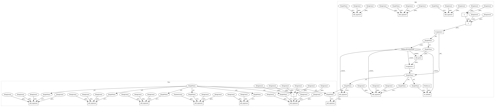

dbe923ef2f7f3bebed34475ab495e9b6a0746c21,cnvlib/commands.py,,,#,1538
Before Change
P_export_theta = P_export_subparsers.add_parser("theta",
help=_cmd_export_theta.__doc__)
P_export_theta.add_argument("tumor_segment",
help=Tumor-sample segmentation file from CNVkit (.cns).)
P_export_theta.add_argument("normal_reference",
help=Reference copy number profile (.cnn), or normal-sample bin-level
log2 copy ratios (.cnr).)
P_export_theta.add_argument("-o", "--output", help="Output file name.")
P_export_theta.set_defaults(func=_cmd_export_theta)
// All else: export any number of .cnr or .cns files
for fmt_key, fmt_descr in (
("cdt", "Convert log2 ratios to CDT format. Compatible with Java TreeView."),
("jtv", "Convert log2 ratios to Java TreeView"s native format."),
// Not implemented yet:
// "multi" (Nexus Copy Number "multi1")
// "gct" (GenePattern).
):
def _cmd_export_simple(args):
sample_ids = list(map(core.fbase, args.filenames))
rows = export.merge_samples(args.filenames)
formatter = export.EXPORT_FORMATS[fmt_key]
outheader, outrows = formatter(sample_ids, rows)
core.write_tsv(args.output, outrows, colnames=outheader)
P_export_simple = P_export_subparsers.add_parser(fmt_key, help=fmt_descr)
P_export_simple.add_argument("filenames", nargs="+",
help=Log2 copy ratio data file(s) (*.cnr), the output of the
"fix" sub-command.)
P_export_simple.add_argument("-o", "--output", help="Output file name.")
P_export_simple.set_defaults(func=_cmd_export_simple)
// version ---------------------------------------------------------------------
def print_version(_args):
Display this program"s version.
print(__version__)
After Change
outheader, outrows = export.export_freebayes(args.segments, args)
core.write_tsv(args.output, outrows, colnames=outheader)
P_export_fb = P_export_subparsers.add_parser("freebayes",
help=_cmd_export_fb.__doc__)
P_export_fb.add_argument("segments", nargs="+",
help=Segmented copy ratio data files (*.cns), the output of the
"segment" sub-command.)
P_export_fb.add_argument("-i", "--sample-id",
help="Sample name, as FreeBayes should see it.")
// Arguments to drop in favor of "call":
P_export_fb.add_argument("--ploidy", type=int, default=2,
help="Ploidy of the sample cells. [Default: %(default)d]")
P_export_fb.add_argument("--purity", type=float,
help="Estimated tumor cell purity or cellularity.")
P_export_fb.add_argument("-g", "--gender",
choices=("m", "male", "Male", "f", "female", "Female"),
help=Specify the sample"s gender as male or female. (Otherwise
guessed from chrX copy number).)
// /
// Argument that could be shared across "export":
P_export_fb.add_argument("-y", "--male-reference", action="store_true",
help=Was a male reference used? If so, expect half ploidy on
chrX and chrY; otherwise, only chrY has half ploidy. In CNVkit,
if a male reference was used, the "neutral" copy number (ploidy)
of chrX is 1; chrY is haploid for either gender reference.)
P_export_fb.add_argument("-o", "--output", help="Output file name.")
P_export_fb.set_defaults(func=_cmd_export_fb)
// THetA special case: takes tumor .cns and normal .cnr or reference.cnn
In pattern: SUPERPATTERN
Frequency: 3
Non-data size: 21
Instances
Project Name: etal/cnvkit
Commit Name: dbe923ef2f7f3bebed34475ab495e9b6a0746c21
Time: 2015-07-08
Author: eric.talevich@gmail.com
File Name: cnvlib/commands.py
Class Name:
Method Name:
Project Name: etal/cnvkit
Commit Name: dbe923ef2f7f3bebed34475ab495e9b6a0746c21
Time: 2015-07-08
Author: eric.talevich@gmail.com
File Name: cnvlib/commands.py
Class Name:
Method Name:
Project Name: etal/cnvkit
Commit Name: 1a84f280b54dd9435da248ecd0cbe8ea2c44b6b4
Time: 2015-07-08
Author: eric.talevich@gmail.com
File Name: cnvlib/commands.py
Class Name:
Method Name:
Project Name: etal/cnvkit
Commit Name: 0507ae5a37d4916d6e5ca2c62c103a1cbce4440b
Time: 2015-07-08
Author: eric.talevich@gmail.com
File Name: cnvlib/commands.py
Class Name:
Method Name: